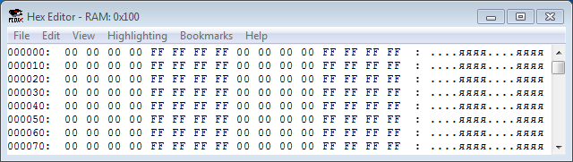
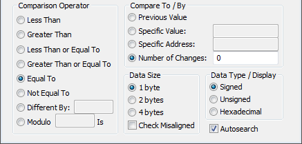
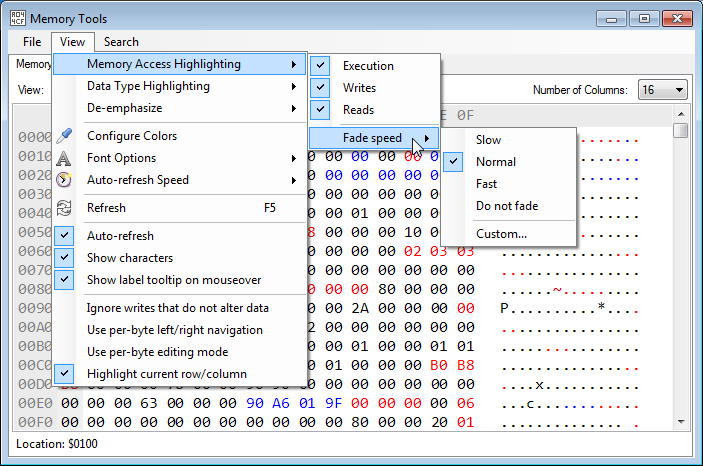
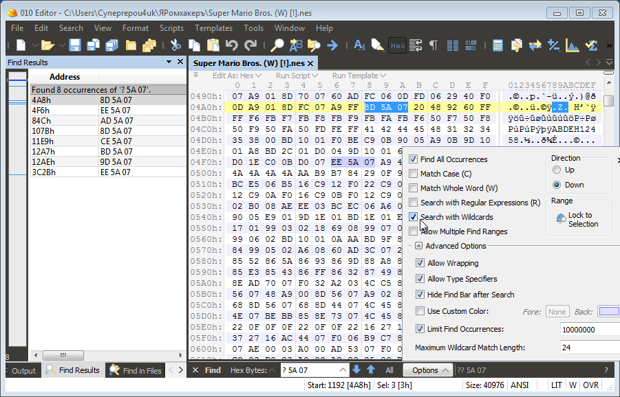

Содержание
Если для написания своего кода ты хочешь выделить себе в RAM отдельные счетчики, индикаторы, некие новые игровые параметры, от которых будет зависеть выполнение кода в оригинальной игре, для этого требуется найти свободный адрес.
Свободными адресами считаются те адреса, которые вообще не используются в игре для хранения каких-либо данных. Эти свободные адреса ты можешь применять при написании своего кода, чтобы положить в них свои личные данные.
Если ты уже расшифровал существующие игровые адреса и добавил на них комментарии, тебе будет проще найти свободные адреса. А если ты нашел в интернете исходный код игры, то можно просто посмотреть в нем какие адреса используются в игре, а значит оставшиеся адреса скорее всего являются свободными.
Если ты собираешься использовать инструкции с режимом адресации Indirect, потребуются минимум 2 соседних адреса в нулевой странице $0000-$00FF. Их не всегда можно найти, так как разработчики игр знают их важность и забирают их себе.
Даже если тебе не удастся найти адреса в нулевой странице, то это не так страшно, с этим всегда можно что-то поделать.
Адреса оставшегося диапазона $0100-$07FF практически одинаковые по ценности, и чем больше ты их найдешь, тем лучше.
В первую очередь можно обратить внимание на адреса стека в диапазоне $0100-$01FF. Исключив адреса, используемые для хранения байтов адресов возврата из подпрограмм и выявив базовый свободный диапазон, начинать искать свободные адреса нужно с начала этого диапазона и продвигаясь вперед.
Первичный признак свободного адреса - байт в нем никогда не изменяется. Исключением является то, когда игра очищает RAM (записывает байты #$00) частично или полностью.
Иногда игры очищают лишь некий дипазон вместо полной очистки RAM. Причем они могут делать это не один раз, например перед началом загрузки каждого уровня. Тебе следует выяснить, какие диапазоны адресов игра очищает и когда именно она это делает. По умолчанию байты в RAM выглядят так (настраивается в эмуляторе в Config -> RAM Init).

Поставь эмулятор на паузу, сделай Hard Reset, и покадрово проматывай игру вперед горячей клавишей Frame Advance. Проверяй страницы RAM, в которых байты #$FF были перезаписаны на #$00, посчитай количество кадров от начала запуска игры.
Очистка встречается в большинстве игр, но она еще не означает то, что адрес не является свободным, если игра перезаписывает байт на #$00. Однако даже если некий адрес диапазона, который игра очищает время от времени, действительно является свободным, очистка может помешать тебе регулярно использовать этот свободный адрес.
Во многих играх есть программы, вычисляющие RNG (рандом), используя одну или несколько страниц RAM, в которых байты меняются достаточно часто. Код будет считывать байты из большого диапазона адресов, но еще не означает то, что некий адрес этого диапазона не является свободным, даже если код считывает байт из адреса.
Выбери опцию для просмотра способа поиска свободного адреса. Комбинируя эти способы, ты минимизируешь шанс того, что в какой-то нестандартный момент игра решит воспользоваться твоим личным адресом, который на самом деле изначально не являлся свободным, что испортит тебе твою программу.
| RAM Search | Эмулятор Mesen | Брейкпоинты | Поиск инструкций | Прочие способы |
В эмуляторе выбери опцию Config -> RAM Init -> Fill $00, чтобы изначально вся RAM была забита байтами #$00. Затем поставь эмулятор на паузу и сделай Hard Reset.
В окне RAM Search выбери Equal To + Number of Changes 0, и поставь галочку Autosearch. Нажми кнопку Reset, если ты уже пользовался этим окном.

После чего сними эмулятор с паузы, начни играть в игру и продолжай играть как можно дольше, используя все существующие игровые возможности. Желательно записать свое прохождение на Movie (фильм) в эмуляторе через File -> Movie, который, вероятно, понадобится тебе в дальнейшем при поиске брейкпоинтов.
Еще рекомендую активировать окно Code/Data Logger для сбора информации по байтам ROM'а в файл .cdl, пока ты проходишь игру. Этот файл может пригодиться в будущем тебе или кому-то еще.
Во время прохождения игры окно RAM Search будет постоянно фильтровать список адресов, оставляя лишь те, которые ни разу не изменяли свое значение.
Код очистки RAM не повлияет на количество изменений, так как изначально в RAM везде был записан байт #$00, следовательно по мнению RAM Search запись байта #$00 не является изменением байта.
Когда наиграешься, кликай правой кнопкой на оставшихся адресах списка, чтобы перейти на эти адреса в Hex Editor'е. Помечай закладками потенциально свободные адреса, выделяя их зеленым цветом.
Не всегда стоит ставить закладки на адреса в крупных диапазонах RAM, таких как спрайты, музыка, данные уровня и так далее, поскольку использовать эти свободные адреса может быть опасно из-за возможного использования их игрой.
Hex Editor в эмуляторе FCEUX подсвечивает только байты, которые изменяют свое значение на другое относительно предыдущего значения. В эмуляторе Mesen Hex Editor обладает более продвинутой подсветкой. Он вызывается через Debug -> Memory Tools, а подсветка настраивается во View -> Memory Access Highlighting.

По умолчанию скорость обновления окна - 30 FPS, это можно изменить в настройке Auto-refresh Speed. Скорость обновления не влияет на сбор данных о чтении/записи байтов для их подсветки.
Красными подсвечиваются те адреса, в которые код игры что-то записывал (независимо от предыдущего значения байта), а синими - если байт из адреса был считан кодом. Подсветка байтов полностью сбрасывается после Reset.
Данные о подсветке эмулятора Mesen можно использовать в комбинации с поиском RAM Search и брейкпоинтами в эмуляторе FCEUX. В некоторых случаях также будет полезно переключиться на вкладку Access Counters для просмотра счетчиков чтений и записей адресов RAM.
В настройке Fade Speed (скорость исчезновения подсветки) запиши в Custom количество кадров = 1, после чего сделай Hard Reset и покадрово промотай игру (Опции -> Настройка -> Горячие клавиши -> Run Single Frame) в ожидании того, когда игра очистит RAM. После чего измени Fade Speed на Do not fade, чтобы подсветка не исчезала, и начинай проходить игру.
Во время прохождения код будет работать с адресами, что отобразится в суммарной подсветке адресов. Черные адреса без подсветки будут являться потенциально свободными.
Если код игры считывает диапазон адресов, весь этот диапазон окажется подсвеченным. Будет лучше полностью отключить код RNG, или избавиться от чтения адресов, например заменив инструкции чтения на инструкции
Еще можно в настройках подсветки снять галочку Read, но это приведет к тому, что ты не узнаешь какие адреса в других диапазонах были считаны.
Каждое сохранение эмулятора хранит свой собственный список подсвеченных байтов, и эти списки нельзя суммировать. Это означает, что не получится пройти игру всевозможными путями и получить общий список подсвеченных байтов, используя сохранения перед такими развилками.
Теоретически можно добиться суммирования списка подсвеченных байтов, вручную отредактировав файлы сохранений.
Когда ты получил список потенциально свободных адресов, стоит проверить их на то, что код игры с ними не работает. Существующие комментарии на игровые адреса RAM помогут тебе прочитать код. Если ты выяснил, что адрес не является свободным, снимай с него закладку и переходи к исследованию следующего адреса.
Для экономии времени нужно поставить брейкпоинты на как можно большее количество потенциально свободных адресов. Брейкпоинты должны быть активны постоянно, пока ты повторно проходишь игру. Удалять стоит лишь брейкпоинты на те адреса, которые по твоему мнению оказались занятыми игрой.
Если ты воспроизводишь Movie своего прохождения, настрой горячую клавишу Toogle Turbo, чтобы проматывать прохождение с максимальной скоростью без необходимости удержания кнопки Turbo. Для увеличения скорости отключи лишние окна в эмуляторе и в целом снизь нагрузку на компьютер.
Если срабатывает Read брейкпоинт, значит код игры считывает адрес. Нужно осмотреться по коду и понять с какой целью игра пытается считать адрес. Если это код RNG, можно смело ставить Forbid брейкпоинт на адресе инструкции и продолжать дальшей поиск других срабатываний Read брейкпоинта.
Если срабатывает Write брейкпоинт, значит код игры делает запись в этот адрес. Выясни с какой целью происходит запись. Если это запись с целью очистки диапазона RAM, ставь Forbid на адресе инструкции и пробуй искать другие срабатывания.
Даже если брейкпоинты не срабатывают на потенциально свободных адресах, это еще не гарантирует то, что адрес действительно свободный. Ты вполне мог не затронуть игровую ситуацию, когда игре понадобится этот адрес.
Для поиска инструкций нужно знать опкоды этих инструций, а также существующие режимы адресации. Первичный поиск осуществляется через попытку нахождения инструкций
Если адрес находится в диапазоне $0100-$07FF, нужно искать инструкции с режимом адресации Absolute. Например, для поиска адреса $0123 ищи байты AD 23 01, чтобы найти инструкции
Для поиска адреса в диапазоне $0000-$00FF скорее всего используется режим адресации Zero Page. Для поиска $0023 нужно искать A5 23/85 23, чтобы найти инструкции
В редких случаях для адресов нулевой страницы применяется режим адресации Absolute, поэтому для подстраховки стоит поискать AD 00 23 и 8D 00 23.
Данный вид поиска присутствует в некоторых Hex-редакторах, например в 010 Editor, работа с которым будет описана на главной странице.
Если ты ищешь инструкции с адресом $0123, ты можешь ввести в поиск "? 23 01", и Hex-редактор покажет тебе все совпадения, в которых второй и третий байт являются 23 и 01, а первый байт может быть любым. По первому байту ты сможешь определить, действительно ли он является опкодом инструкции, или это просто случайный набор байтов.

Это менее удобный способ поиска по сравнению с поиском байтов. Потребуется скопировать весь код из Debugger'а, причем изо всех PRG банков сразу, вставить этот код в текстовый редактор, а затем попробовать найти адреса в нем. Для копирования лучше пользоваться автокликером.
Нужно уметь отличать код от байтов данных, которые Debugger интерпретировал как код, чтобы убедиться, что это действительно реальная инструкция, а не случайный набор байтов.
Не все инструкции можно найти прямым поиском. Твой потенциальный свободный адрес может входить в некий диапазон адресов, вычисляющийся через режим адресации Indexed, начальный адрес которого является другой адрес.
Например, если твой адрес $0123, он может вычисляться кодом через инструкцию
Если адрес вычисляется через режим адресации Indirect, которые выглядят примерно так -
Если тебе не требуется свободный адрес на постоянной основе, а лишь на какое-то определенное время, например для некого игрового экрана или для быстрого промежуточного вычисления, то полностью свободные адреса искать не обязательно.
Не все игровые адреса регулярно используются игрой. Например, адреса с координатами объектов могут не использоваться на экране с логотипом. Это значит, что до тех пор, пока ты не приступишь непосредственно к игровому процессу прохождения уровней, ты можешь временно использовать эти адреса в качестве свободных.
Разработчики игр тоже знают о такой возможности, и иногда сами применяют выделенные адреса для различных игровых функций не по прямому назначению.
Если ты решил воспользоваться этим способом, следует при помощи брейкпоинтов убедиться, что код игры не будет сразу считывать байты в этих адресах, а первым делом перейдет к записи.
Например, если ты взял себе адрес с координатами игроков и оставил в нем какой-то байт, и в то же время игра самостоятельно его не перезаписала перед загрузкой уровня, это приведет к тому, что объект появится на экране в неположенном месте.
В каждой игре есть несколько адресов, обычно в нулевой странице, которые специально зарезервированы для промежуточных вычислений или для временного использования инструкций с режимом адресации Indirect.
Применяя такие адреса самостоятельно для аналогичных целей, нужно также убедиться, что байты, которые останутся в этих адресах после твоей работы с ними, не потребуются игре и будут перезаписаны перед чтением.
В качестве временных адресов еще можно использовать и игровые адреса, если предварительно сохранить байт из адреса в стеке, выполнить промежуточное вычисление, а затем вернуть байт в адрес на место. Для этого подойдет практически любой игровой адрес.
Если по каким-то причинам тебе вообще не удалось найти свободных адресов, что почти нереально, есть несколько способов выделить себе свободные адреса.
Диапазон для параметров спрайтов занимает 256 байтов, которые ежекадрово копируются в OAM Memory после записи в регистр видеопроцессора $4014. Предположим, что диапазон для спрайтов является $0200-$02FF.
Ты можешь немного отредактировать код, чтобы он, к примеру, начинал запись параметров спрайтов не с адреса $0200, а с адреса $0204, либо чтобы он заканчивал запись не в $02FF, а в $02FB. Это позволит тебе выделить 4 свободных адреса, пожертвовав удалением одного спрайта с экрана, что практически не будет заметно.
Если ты также используешь первый из этих четырех адресов, который отвечает за Y координату спрайта, нужно убедиться, что в нем будет записан байт #$F0 или выше перед записью в регистр $4014, в противном случае на экране может постоянно появляться какой-то рандомный спрайт.
Можно вырезать из игры какую-то относительно бесполезную функцию, например демо-режим. Поискав адреса, которые используются исключительно для демо-режима, отключи переход в этот режим, тем самым высвободив себе адреса, которые задействованы игрой для этой функции.
Байт - набор из 8-ми битов. Но не всем программам нужен каждый из этих битов у байта в адресе. Например, если адрес отвечает за некую игровую опцию с четырьмя вариантами, байт в нем может быть максимум #$03, а значит используются лишь первые 2 бита, оставляя свободными остальные 6.
В этих свободных битах ты можешь хранить свою собственную информацию, однако это потребует отредактировать код везде, где считывается/записывается байт в адресе, чтобы он не затрагивал последние 6 битов.